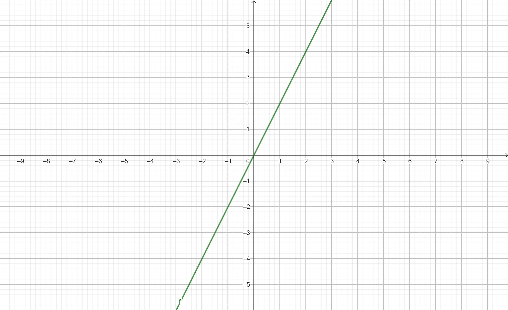
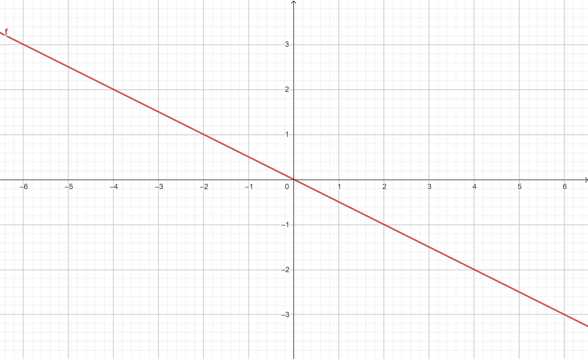

Para contruir os gráficos de uma função afim aprendemos de duas formas, analisando o corte no eixo X e no eixo Y, outra forma é atribuindo valores.
No fundamental eu aprendi atribuindo valores, por isso achei mais fácil continuar resolvendo desta forma por já estar familiarizada com o método.
Basicamente elabora-se um tipo de tabela onde o eixo X será os valores atribuídos e o eixo Y o resultado da função, veja uma representação:
| X | Y |
| -2 | 6+2=8 |
| -1 | 3+2=5 |
| 0 | 2 |
| 1 | -3+2=5 |
| 2 | -6+2=-4 |
Veja abaixo como essa reta ficou, eu desenhei ela no caderno para ter certeza e depois analisei no geogebra.

Esta é uma reta simples, a seguir veremos interseções.
As interseções são duas retas que se encontram em um determinado ponto, para isso temos duas funções,obviamente para termos duas retas.
Podemos resolver as interseções com sistemas, irei fazer um exemplo a seguir.
Para resolver essas funções e encontrar a interseção primeiramente o f(x) passa a ser o nosso Y, assim as funções ficam:
Agora que elas estão como Y precisamos encontrar o nosso X, para isso, transformamos as duas funções em uma equação de 1° grau e assim obteremos o resultado de X.
Depois precisamos encontrar o nosso Y, temos a liberdade de escolher qualquer uma das funções para encontrar o Y, já que é só substituir o valor de X em seu lugar na função. Mas até chegar nesse resultado podemos atribuir valores e fazer a tabela, igual mostrei acima, depois que percebemos no esboço o encontro podemos simplesmente atribuir os pontos de interseção.
Essas retas tem como característica apenas um ponto de encontro!
A função linear é aquela em que temos b=0 em alguns casos, muitos problemas de proporcionalidade utilizam a função f(x)=ax+b, que é a mais usada na função linear.
Sabe-se que o preço do quilograma da costela bovina está R$40,99.
a) Estabeleça a função matemática que descreva a relação entre o quilogramacomprado e o preço pago por um consumidor.
b) Quanto foi pago na compra de 2,5 kg dessa carne?
c) Se foi pago R$ 204,95, quantos quilogramas foram comprados?
Os gráficos das lineares tem característica de serem descrescentes ou crescentes, e sempre passaram pela origem que é (0,0).
O coeficiente A indica a inclinação da reta, quanto maior o valor do A maior será a inclinação das retas e enquanto menor o seu valor menor a inclinação das retas.
Se A for positivo a reta será CRESCENTE, se A for negativo a reta será DECRESCENTE.
Exemplo 1: f(x) = 2x
Sua reta será CRESCENTE, pois o valor do A é positivo.
Exemplo 2: f(x) = -x/2
Sua reta será DECRESCENTE, pois o valor do A é negativo.
Em resumo, as linhas dos gráficos lineares ou afins são retas que cruzam o eixo y no ponto onde x é igual a zero. Elas são importantes para diversos campos da matemática e ciência mostrando uma modelagem linear.